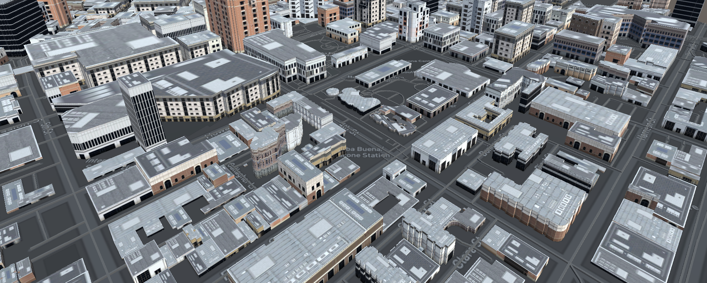

Looking forward to participate in a project that involves data analysis, machine learning and blockchain technology.
Bio
I have more than ten years of experience in the IT sector, I have participated in its different areas: systems development, project management, network and server administration, technical support and training.
During my PhD I gained experience in the development and application of deep learning and deep reinforcement learning models, high performance computing and computer graphics.
I have the firm conviction that the application of artificial intelligence in all areas will make the use of resources more efficient and help us find new solutions.
Blockchain technology will make the current economic system more fair and inclusive, these two technologies are key factors to improve the quality of life.
I am ready to participate in a project that involves data analysis, machine learning and blockchain technology.
Experience
Computer Scientist
Barcelona Supercomputing Center
Jan 2014 - Jun 2019 (5 years 6 months)
I developed a research project entitled "Crowd Simulation and Visualization". The objetive was to
represent the most realistic possible scenarios in a city, this kind of systems are used in urban planning,
simulating disasters, video games, among other applications. The project combined differents research
areas such as Machine Learning, Parallel Programming Models, Computer Graphics among others.
Director of Infrastructure
Servicios Integrales para el Desarrollo Comunitario
Jan 2012 - Present (9 years +)
Technical support, training, development of computer systems and administration of the network and its services.
Education
Universitat Politècnica de Catalunya
PhD in Computer Sciences with International Mention
2014 - 2019
Universitat Politècnica de Catalunya
M.Sc. Computer Architecture, Networks and Systems, Computer Science
2011 - 2013
Universidad Nacional Autónoma de México
Engineer's degree, Electronic Engineering
1997 - 2001

Publications
Journals
-
Modelling Crowds in Urban Spaces.
Computación y Sistemas 2017.
Rudomín, Isaac; Vargas-Solar, Genoveva; Espinosa-Oviedo, Javier A.; Pérez, Hugo; Zechinelli-Martini, José-Luis.
-
Humanitarian Logistics and Cultural Diversity within Crowd Simulation.
Computacion y Sistemas, 2017.
Carlos Alberto Ochoa Zezzatti, Isaac Rudomin, Genoveva Vargas Solar, Javier A. Espinosa-Oviedo, Hugo Pérez, José-Luis Zechinelli Martini.
-
Support Vector Machine and Spiking Neural Networks for Data Driven Prediction of Crowd Character Movement.
Proceedings of the Artificial Life Conference. The MIT Press 2016.
Israel Tabarez-Paz, Isaac Rudomin, Hugo Perez.
-
Scaling Crowd Simulations in a GPU Accelerated Cluster.
High Performance Computer Applications: 6th International Conference, Mexico City, Mexico, Revised Selected Papers. Springer 2016.
Hugo Pérez, Benjamín Hernández, Isaac Rudomin, Eduard Ayguade.
-
Simulating and Visualizing Real-Time Crowds on GPU Clusters.
Computación y Sistemas, 2014.
Benjamin Hernandez, Hugo Perez, Isaac Rudomin, Sergio Ruiz, Oriam DeGyves, Leonel Toledo.
Book Chapters
-
Task-based Crowd Simulation for Heterogeneous Architectures.
Innovative Research and Applications in Next-Generation High Performance Computing. IGI Global 2016.
Hugo Perez, Benjamin Hernandez, Isaac Rudomin, Eduard Ayguade.
Conferences
-
Urban Scale Crowd Data Analysis, Simulation and Visualization
GPU Technology Conference – NVIDIA. USA 2017
Isaac Rudomin, Hugo Perez, Leonel Toledo, Jorge Hernandez.
-
Crowd Simulation and Visualization
Barcelona Supercomputing Center International Doctoral Symposium. Spain 2017
Hugo Perez, Isaac Rudomin, Eduard Ayguade.
-
In Situ Crowd Simulation and Visualization
Barcelona Supercomputing Center International Doctoral Symposium. Spain 2016
Hugo Perez, Isaac Rudomin, Eduard Ayguade.
-
Modelling Crowds in Urban Spaces: From Big Data to Smart Secure Regions.
International Supercomputing Conference in Mexico ISUM. Mexico 2016.
Genoveva Vargas-Solar, Javier A. Espinosa-Oviedo, Hugo Perez, Isaac Rudomín, José Luis Zechinelli-Martini.
-
OmpSuperscalar: Task-Parallel Simulation and Visualization of Crowds with Several CPUs and GPUs.
GPU Technology Conference GTC. USA 2015.
Hugo Perez, Benjamin Hernandez, Isaac Rudomin.
-
Task-based Simulation and Visualization of Crowds for Heterogeneous Cluster.
International Supercomputing Conference in Mexico ISUM. Mexico 2015.
Hugo Perez, Benjamin Hernandez, Isaac Rudomin.
-
Generation, Simulation and Rendering of Large Varied Animated Crowds.
International Supercomputing Conference in Mexico ISUM. Mexico 2014.
Isaac Rudomin, Benjamin Hernandez, Hugo Perez.
-
In Situ Crowd Simulation and Visualization.
International Supercomputing Conference in Mexico ISUM. Mexico 2014.
Hugo Perez, Benjamin Hernandez, Isaac Rudomin.
Checkout some Projects!
Dance Recognizer
"Which dance is that?, let's find it!"
Applying a deep learning algorithm to identify the kind of dance based on an image.
You can view the source code and description here

Fred S.
"Bootstrap is amazing. I've been using it to create lots of super nice landing pages."

Sarah W.
"Thanks so much for making these free resources available to us!"